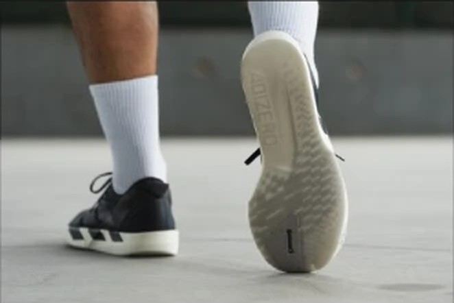
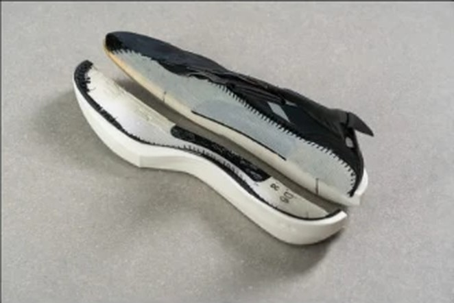

RACE｜レーシングシューズ
2万円以下で選べる、唯一のレース用。
点数を出せたレース用21足の中で、2万円を切るのはこの靴だけである。¥17,600で実測176g、前足部のエネルギーリターンは77.3%。性能点は21足中11位だが、コスパ点は5.0。1kmあたり約25円は、レース用としては飛び抜けて安い。
脚力に自信があり、軽さを優先する人。レース用を安く手に入れたい人。ポイント練習とレースを1足で済ませたい人。
長い距離で脚を守りたい人。着地でぶれやすい人。厚底のクッションに慣れている人。


実測176gは、スコアのある107足の中で軽いほうから5番目。前足部のエネルギーリターン77.3%は上から6番目。軽さと反発は、価格の高いレース用と並ぶ。
曲げ剛性は5.2Nで、107足の中で2番目に低い。プレートで押し出す靴ではなく、足の動きに合わせて曲がる靴である。
摩耗深度は0.6mmで、推定寿命は約700km。ADIOS PRO 5（1.1mm）より減りにくい。摩擦係数も0.55ある。
5点満点。計測値を当サイトのルールで点数にしたもの。
軽さ5.0、スピード4.5、耐久性4.5、グリップ4.0と、走るための項目は高い。一方でクッション2.5、安定性1.5と、守りの項目が低い。レース部門は安定性も見るので、性能点は11位にとどまった。
短いほど安い。寿命は摩耗深度から推定。
高いほどクッションがある。
| JAPAN 9 | ADIOS PRO 5 | EVO SL | |
|---|---|---|---|
| 価格 | ¥17,600 | ¥29,700 | ¥19,800 |
| 実測重量 | 176g | 178g | 223g |
| 衝撃吸収（SA） | 119 | 149 | 147 |
| エネルギーリターン前足部 | 77.3% | 80.4% | 73.5% |
| 摩擦係数 | 0.55 | 0.74 | 0.40 |
| 摩耗深度 | 0.6mm | 1.1mm | 0.6mm |
| 性能点 | 3.76 | 4.14 | 3.77 |
| コスパ点 | 5 | 4 | 4.5 |
ADIOS PRO 5はほぼ同じ重さで、クッション（149SA）と反発（80.4%）が上。ただし価格は¥12,100高く、1kmあたりでは約85円かかる。EVO SLはクッションがあり、ジョグにも使える。JAPAN 9は軽さと費用で選ぶ靴である。
弱点ははっきりしている。衝撃吸収は119SAで、107足の中で低いほうから16番目。かかとの幅は72.5mmで、2番目に狭い。ヒール剛性も1である。脚にかかる負担は、厚底のレース用より大きいと考えたい。
かかとが細く、クッションも薄い。厚底の靴から履き替える人は、レース前に練習で何度か履いて脚を慣らしておきたい。
レース用に3万円を出しにくい人の選択肢になる。ポイント練習とレースをこの1足で兼ね、ジョグはクッションのある靴で走る。2足合わせても4万円前後に収まる。
軽い、弾む、減りにくい、安い。クッションと安定性を割り切れるなら、レース用で一番費用のかからない1足である。
※本記事は海外ラボ（RunRepeat）の計測データとメーカー公表値、当サイトの計算をもとにした分析です。計測はUS9（約27cm）です。1kmあたりの費用は摩耗深度から推定した寿命での概算です。価格は当サイトの掲載値で、変更されている場合があります。JAPAN 9の計測値は、海外名ADIZERO ADIOS 9のレビューによります。